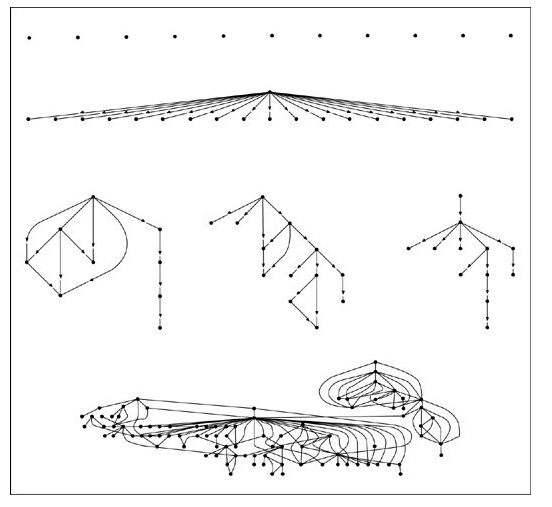

Personas especiales
Una de las premisas centrales del libro “The Tipping Point”, de Malcom Gladwell, es que unas pocas personas bien conectadas pueden expandir ideas, imponer modas, o influenciar en el comportamiento de muchas personas. En esencia el argumento es que hay unos pocos influenciadores que son capaces de dictar el comportamiento de muchos. A esto Gladwell lo llama la ley de los pocos, en cada fenómeno de “contagio social” hay unas pocas personas especiales que son los determinantes de la viralización de las ideas. Gladwell los clasifica en “conectores”, “especialistas” y “vendedores”. Los conectores serían personas con el don de conectar al mundo, son los que tienen la capacidad de conectarse con muchas otras personas fácilmente, los que fácilmente pueden hacer muchos amigos. Esas personas tienen una red social sobre las cien personas. Los especialistas serían aquellas personas a las que acudimos para obtener nueva información, los que acumulan información, y la tranzan de alguna manera. Además de tener conocimiento tienen las habilidades sociales y comunicacionales para difundir este conocimiento. Los vendedores, o persuasores, son los que tienen poderosas habilidades de negociación. De alguna manera logran que los demás quieran llegar a un acuerdo con ellos.
La teoría de Gladwell se basa en los estudios de los famosos 6 grados de separación, realizados por el sicólogo Stanley Milgram, quien realizó una serie de experimentos en la década de 1960 (los experimento del mundo pequeño), en que se trataba de conectar a dos personas en una red social, por ejemplo, se elegían a dos personas en Estados Unidos y se trataba de contactarlas a través del menor número de contactos. Se encontró que el largo promedio para enviar un mensaje desde una persona cualquiera A a otra B estaba entre 6 a 7 personas.
Milgram consideraba que existían ciertos puntos centrales (hubs) en las redes sociales que actúan como verdaderos “enrutadores” que permiten hacer atajos dentro de las redes sociales. Supongamos que quiero mandar un mensaje a una habitante X en Chicago, una manera sería tratar de contactar a Barack Obama pues al ser el presidente de USA podría acceder más fácilmente a alguien que pueda hacer llegar mi mensaje a esa persona, un camino sería acudir a nuestro presidente, o al alcalde de Santiago ;). Pareciera que Milgram, y por ende Gladwell, tienen razón, habría personas especiales que permiten asegurar que las redes sociales construyan caminos de enlace de longitudes cortas.
Pero, otra vez estamos siendo atrapados por las explicaciones de sentido común, porque la teoría de Gladwell no se sostiene. La ley de los pocos en realidad son dos hipótesis que son muy difíciles de probar, la primera es que hay gente más influyente que otra, y la segunda es que la influencia de estas personas es magnificada por un proceso de contagio social. La primera hipótesispuede ser criticada desde un punto de vista epistemológico, se requiere definir muy bien que es la influencia y después diseñar experimentos que permitan confirmarla.
Con respecto al problema del contagio, o “epidemia social”, podemos recurrir a la experimentación y análisis de la información que nos proveen las redes de sociales, en particular las redes sociales en internet desarrolladas en los últimos años. Al respecto, tenemos que en 2008 dos investigadores de Microsoft Research analizaron una red de 240 millones de usuarios de Messenger para encontrar el grado de separación entre 2 usuarios, analizando sus listas de contactos, y encontraron que en general las personas se separan por a lo más en 7 pasos. Los estudios de Milgram abarcaban unos cuantos cientos de personas. Posteriormente Duncan Watts y otros investigadores usaron el email para repetir el experimento de Milgram con la participación de 60.000 personas a lo largo de 166 paises. Si la teoría de los hubs, o conectores, de Gladwell fuera cierta se habrían encontrado estrellas, o puntos concentradores en el tránsito de los mensajes, y no fue lo que se observó. Al no encontrar hubs parece que el rol de los conectores no es tan relevante en el contagio social.
Pero, ¿qué hay de los influenciadores? ¿Es posible que unos pocos especialistas, o vendedores, logren difundir su “infección” social a toda una red? Inicialmente Dunca Watts propuso algunos modelos estadísticos basados en los modelos propuestos por Granovetter (como los que vimos en un artículo anterior). Pero existe una red que permite hacer un estudio mucho mejor, y es twitter.
Watts trabajó con un equipo de investigadores en Yahoo! e investigaron 74 millones de cadenas de difusión en twitter (secuencias de RT de enlaces), iniciadas por 1,6 millones de usuarios, en un periodo de 2 meses a finales de 2009. La idea consistió en contar cuantas veces una URL era retwiteada, contando los RTs de los seguidores (followers) directos, luego los seguidores de sus seguidores, y así, siguiendo la cascada de RTs. La figura que sigue es una representación de los resultados:

Como se puede apreciar hay cascadas de poca profundidad pero anchas, es decir, un link que es enviado a una gran cantidad de seguidores pero que tiene pocos" retwiteos" posteriores. Hay otras cascadas más delgadas, pero de mayor profundidad. Y otras bastantes complejas, con ciclos incluso. La gran mayoría, el 98% del total de las urls no se difunde (los puntos aislados).
Este estudio no resuelve el problema de la influencia. Si un twittero famoso, con muchos followers, promueve un producto, la medida de la cantidad de retweets no es una medida de efectividad del nivel de influencia. La información que nos aporta este estudio es que probablemente la ley de los pocos, desde el punto de vista del “contagio social”, no sea correcta. En este estudio se descubre que efectivamente existen estos fenómenos de “epidemias sociales”, pero son eventos raros. De los 74 millones de eventos analizados sólo unas pocas docenas generaron más de mil “retwiteos”, y solo un par llegaron a los diez mil. En una red (en ese tiempo) de decenas de millones de usuarios, diez mil no es mucho, y sin embargo es un número muy difícil de alcanzar.
Dado esto, quizás sea más práctico olvidarse de la idea de tratar de generar una gran cascada de eventos, y concentrarse en crear muchas pequeñas cascadas, y en ese escenario los pequeños influenciadores funcionan bastante bien. Una campaña de viralización parece funcionar cuando se trabaja con muchos individuos, que tratando de apuntar al gran influenciador. Acá hay un tip para los que quieren usar el marketing en redes como twitter, conviene invertir en twitteros comunes y corrientes, con unos pocos followers que gastar grandes sumas en twiteros con miles de seguidores, al menos, en términos estadísticos, y de resultados en viralización, los estudios sugieren que ambos grupos son similares.
Así que la conclusión parece ser que no hay personas especiales, al menos no a nivel de redes sociales. Todos tenemos el potencial de generar un gran impacto en las redes sociales, el grado de conexión, o las supuestas habilidades de los conectores, expertos, o influenciadores son estadísticamente indiferentes de cualquier otro miembro de la red. La ley de los pocos es una idea que no parece tener un sustento real, es más un tema de percepción que de realidad.